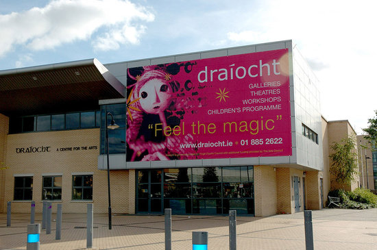
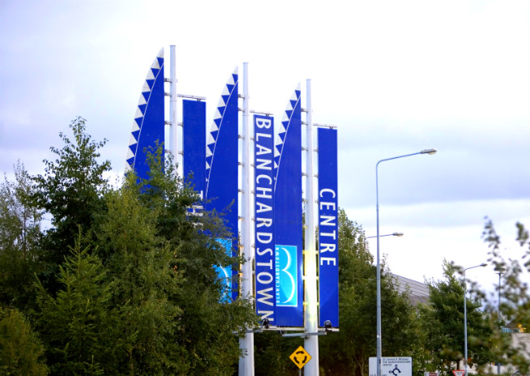

Institute of Technology Blanchardstown
ITB has a 22 hectares (54 acres) campus within Fingal County Council's College Business and Technology Park, on Blanchardstown Road North. In the Blanchardstown area, the college is within walking distance from Blanchardstown Shopping Centre and The Nationl Aquatic Centre.

The Draiocht
Draíocht is a multi-purpose arts & entertainment centre in the heart of Dublin’s Blanchardstown. Choose from comedy, theatre, music, film, dance, family events, exhibitions & more. Draíocht welcomes over 50,000 people a year. Located 15 minutes from ITB, accessable by bus, car or walking.

Blanchardstown Centre
The Blanchardstown Shopping Centre is one of Ireland’s leading shopping and leisure destinations. It boasts 180 stores, three retail parks, a cinema, Leisureplex and 7,000 free car park spaces. The centre has a great variety of stores, including Pennys, Dunnes Stores, Debenhams and Marks & Spencer. There is also an on-site hotel and 20 restaurants.

Aquatic Centre
The National Aquatic Centre is an indoor aquatics facility in Blanchardstown, Dublin, Ireland. The Centre houses a 50 metre swimming pool with an associated diving pool, an aquapark and leisure pool, and a fitness centre.